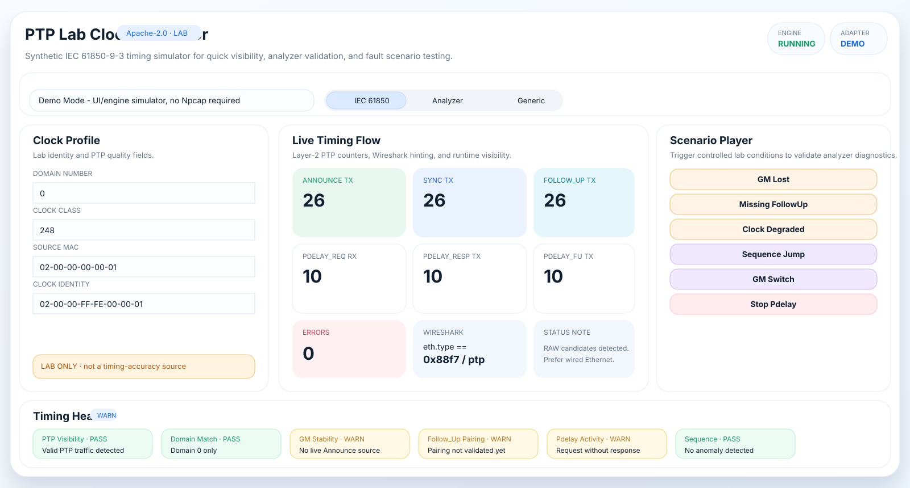

Confirm Layer-2 PTP visibility on the selected NIC before analyzer work starts.
verified IEC 61850 Process Bus · PTPv2 Layer-2 · Apache-2.0
PTP visibility for engineers who need answers before Process Bus testing goes blind.
Process Bus Timing Lab is a Windows PTP lab simulator and timing-health monitor for IEC 61850 FAT, SAT, analyzer validation, and Process Bus troubleshooting. Use it to validate PTP visibility, VLAN/QinQ paths, analyzer decoding, and controlled timing symptoms before deeper SV and GOOSE testing.
PTPv2 Layer-2VLAN / QinQRAW NIC self-testTiming health
Safety boundary: built for lab visibility and analyzer validation. It is not a certified grandmaster, GPS clock, hardware-timestamped timing source, or relay-acceptance reference.
Process Bus Timing LabWindows dashboard

Generate controlled Announce, Sync, Follow_Up, and Pdelay patterns.
Exercise untagged, VLAN, and QinQ PTP frame handling.
Keep short timing-health reports for FAT/SAT notes and engineering discussion.
rocket_launch Download and run
Portable Windows EXE packages for lab engineers.
Use the WPF dashboard for guided sessions or the CLI for repeatable protocol smoke validation, adapter listing, RAW self-test, passive monitor, and evidence export.
hub Built for practical Process Bus timing checks
Turn hidden timing assumptions into visible engineering evidence.
The product focuses on early visibility, repeatable lab stimuli, passive timing-health symptoms, and honest field boundaries. Windows software capture is useful for diagnostics, not certified time distribution.
Controlled Layer-2 frames
Generate Announce, Sync, Follow_Up, Pdelay_Req, Pdelay_Resp, and Pdelay_Resp_Follow_Up patterns for analyzer validation.
VLAN and QinQ aware
Build and inspect untagged, IEEE 802.1Q VLAN, and stacked-tag PTP paths used in Process Bus lab networks.
Passive timing-health view
Group observed PTP by domain, source clock identity, sequence behavior, and message-pairing symptoms.
Fault symptoms on demand
Trigger GM lost, missing Follow_Up, degraded clock, sequence jump, GM switch, and stopped Pdelay lab conditions.
Npcap boundary
Adapter list, MAC-aware source identity, VLAN-aware capture filter, and RAW self-test before lab publication.
Reports for discussion
Export concise PDF and ZIP evidence for issue discussion, FAT notes, SAT preparation, or analyzer validation records.
dashboard Real product workflow
Clock profile, live flow, scenarios, VLAN, and health in one workspace.
The desktop workspace is designed for engineers who need to see what the timing layer is doing without jumping between packet dumps, handwritten notes, and generic counters.
route Engineering workflow
From adapter selection to timing evidence.
1
Select NIC
Use a wired test adapter, mirror port, TAP, or isolated engineering switch.
2
Self-test RAW
Open adapter, apply PTP filter, send one Announce, and check local capture or Wireshark.
3
Choose profile
Use IEC 61850-9-3 lab, analyzer test, or generic PTPv2 defaults.
4
Exercise scenarios
Generate controlled GM lost, missing Follow_Up, degraded clock, or sequence jump symptoms.
5
Export evidence
Save session report and attach it to engineering notes or analyzer issue reports.
settings_ethernet RAW NIC mode
Useful for lab visibility, guarded against overclaiming.
RAW mode uses SharpPcap/Npcap to open a Windows adapter, apply a VLAN-aware PTP filter, capture RX frames, and transmit synthetic Layer-2 PTP packets. It is intentionally isolated from Demo Mode so the app remains usable without native packet drivers.
- Npcap is required for real NIC capture and injection.
- Administrator rights may be required depending on host policy.
- Wireless, VPN, and virtual adapters can behave differently from wired NICs.
- Relay acceptance must use an appropriate certified timing source.
CLI quick checks
dotnet run --project .\src\PtpLabClock.Console -- --list
dotnet run --project .\src\PtpLabClock.Console -- \
--raw-self-test --adapter-index 0 --domain 0
dotnet run --project .\src\PtpLabClock.Console -- \
--raw-self-test --adapter-index 0 --domain 0 \
--vlan --vlan-id 100 --vlan-pcp 4help FAQ
Clear boundaries for real substation work.
Is this a PTP grandmaster replacement?
No. It is a simulator and diagnostic companion. It does not provide certified hardware timestamping or grandmaster-grade time distribution.
Can this help before SV injection?
Yes, mainly as a monitor and lab visibility tool. It can help confirm timing traffic presence and analyzer behavior, but relay acceptance still depends on a real valid timing source.
Does it support VLAN and QinQ?
Yes. The protocol layer and RAW filter are designed for untagged, VLAN-tagged, and stacked VLAN PTP visibility checks.
Is it safe to run on a live station network?
Use it only in controlled lab or approved engineering capture paths. Do not publish synthetic traffic into operational protection networks.